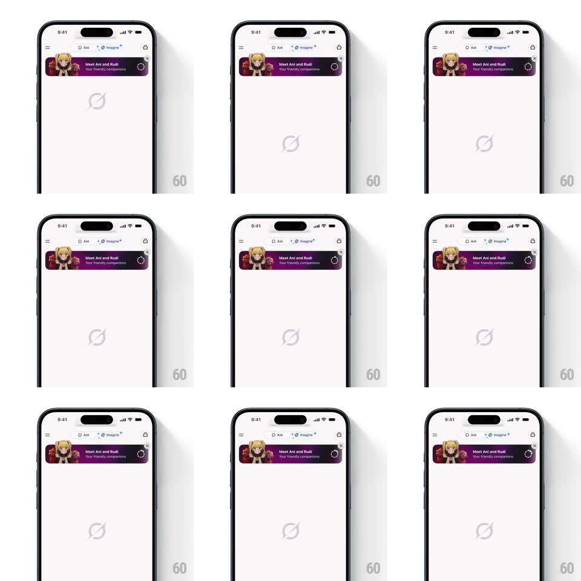

Media
Frame-by-frame

Rebuild this animation 1:1: Grok's companion banner loader - the voice options sheet slides down and fades away while a circular progress spinner appears inside the "Meet Ani and Rudi" banner and starts filling.

Rebuild this animation 1:1: Grok's companion banner loader - the voice options sheet slides down and fades away while a circular progress spinner appears inside the "Meet Ani and Rudi" banner and starts filling. ## Integration Integration: stack-agnostic spec - springs given as stiffness/damping, timed motions as duration + curve; map every value to your framework and animation library of choice. ## Scene Grok home (Ask / Imagine tabs): a purple gradient banner with a character photo, "Meet Ani and Rudi" and "Your friendly companions", an X to dismiss, and a circular control at its right edge. Above it, a sheet lists "Talk to Good Rudi", "Voice Mode", "Create Images" with an Ask Anything input and keyboard. ## Motion spec Pattern: sheet dismiss with inline loader, ~600ms plus load. - Dismiss: the options sheet slides down (spring ~320/26, 350ms) and fades (last 150ms) while the keyboard drops with it. - Loader: the banner's circular control swaps its arrow for a ring spinner (150ms crossfade); the ring fills clockwise (stroke, tied to download progress) with a soft glow. - Complete: the ring closes, flashes once (200ms), and morphs into a play button (icon crossfade 150ms) with the banner title undimmed. ## Calibration - The spinner lives inside the banner - the rest of the home screen stays put. - Ring progress is indeterminate-spin only until real progress exists, then fills. ## Reduced motion The sheet fades out; the ring rotates without glow. ## Don't miss - The sheet and keyboard leave together as one unit. - The banner never resizes - the loader swaps inside the existing circle.